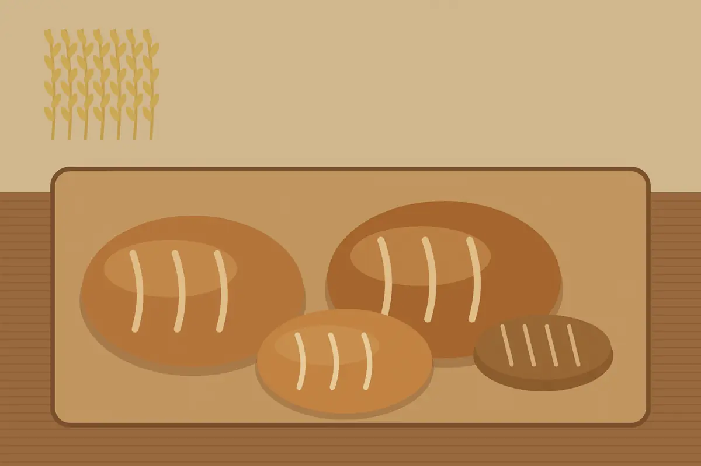
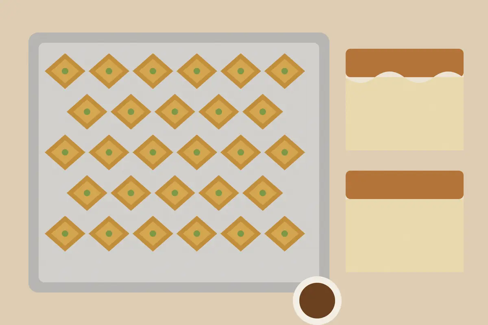

Menu
Everything is baked on the premises. Prices are in lek and include tax. Order a whole loaf or a tray by phone before 18:00 and we will have it ready at six-thirty the next morning.


Bread
Baked in the wood-fired oven at five each morning.
- 130 lek
Bukë gjoni
Our house white loaf, crisp crust, soft crumb. 700 g.
- 150 lek
Bukë misri
Cornbread the way Shkodër grandmothers bake it. 600 g.
- 220 lek
Bukë me thekër
Rye and wheat sourdough, slow risen for 18 hours. 650 g.
- 60 lek
Simite me susam
Sesame ring, baked twice a day.
Savoury
Hand-rolled filo, filled each morning.
- 120 lek
Byrek me spinaq
Spinach and white cheese in thin filo. Per slice.
- 160 lek
Byrek me mish
Minced beef and onion. Per slice.
- 140 lek
Pite me kos
Yoghurt pie with herbs. Per slice.
Sweet
Made by Drita, who has done the sweets since 1994.
- 250 lek
Trileçe
Three-milk sponge with a caramel top.
- 100 lek
Baklava
Walnut and honey, six layers. Per piece.
- 110 lek
Kadaif
Shredded pastry, walnuts, lemon syrup. Per piece.
- 50 lek
Kurabie
Butter biscuit with a drop of quince jam.
Coffee and drinks
Served at the counter or at one of nine tables.
- 100 lek
Espresso
Double shot of our house roast.
- 140 lek
Kafe me qumësht
Espresso with steamed milk.
- 150 lek
Çaj mali
Mountain tea from the Alps near Theth, by the pot.
- 130 lek
Boza
Cold, lightly sour, a winter regular.